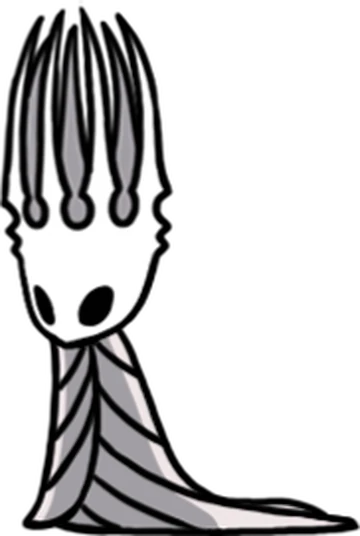
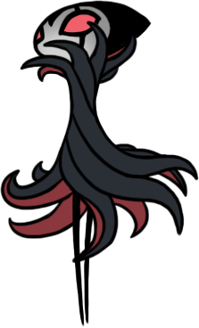
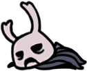

Conheça Hallownest
Um reino subterrâneo em ruínas, habitado por criaturas misteriosas, antigos guerreiros e segredos esquecidos.

Hallownest
Um reino subterrâneo em ruínas, habitado por criaturas misteriosas, antigos guerreiros e segredos esquecidos.








